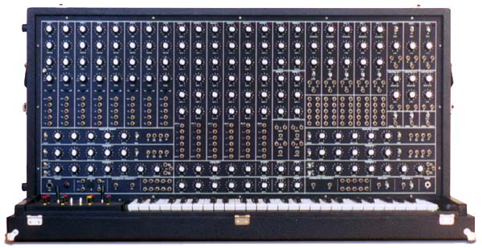
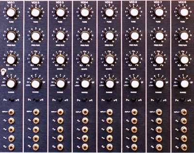

|
Back in 1981, while trying to expand the System 100M the hard way (D.I.Y.) I was standing in an electronics shop with the International 4600 book under my arm when approached by Rick asking if I had trouble getting my VCF's to work. I hadn't built any of the 4600 by that stage, but we got talking. Rick, had built himself a truly impressive 4600 system. His work was immaculate, and if only one 4600 built ever worked, this would be it. Finally, after over a decade I've managed to catch up with Rick again, and took advantage of the visit to take same photos of his synth. |

It consists of :
The front panel is black anodised, brushed aluminium, with text and symbols silk screened on in white. The road case is tolex covered 3/4 inch chipboard, and comes complete with a solid front cover. An unusual choice of RCA jacks has been made for the patch points, though like when patching with banana jacks, only one conductor is used in the patch cords. The keyboard is a separate unit, built into its own road case.

Article, photos, art & design copyright 2000 by Ken Stone
|